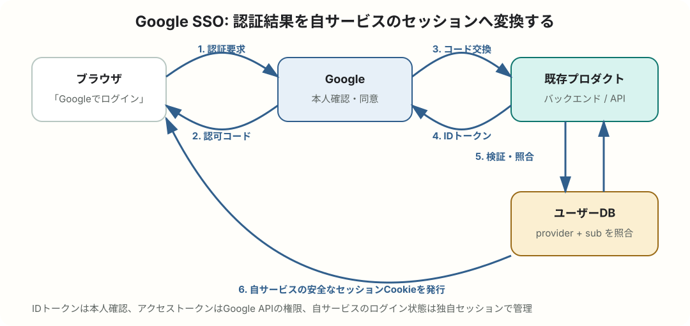
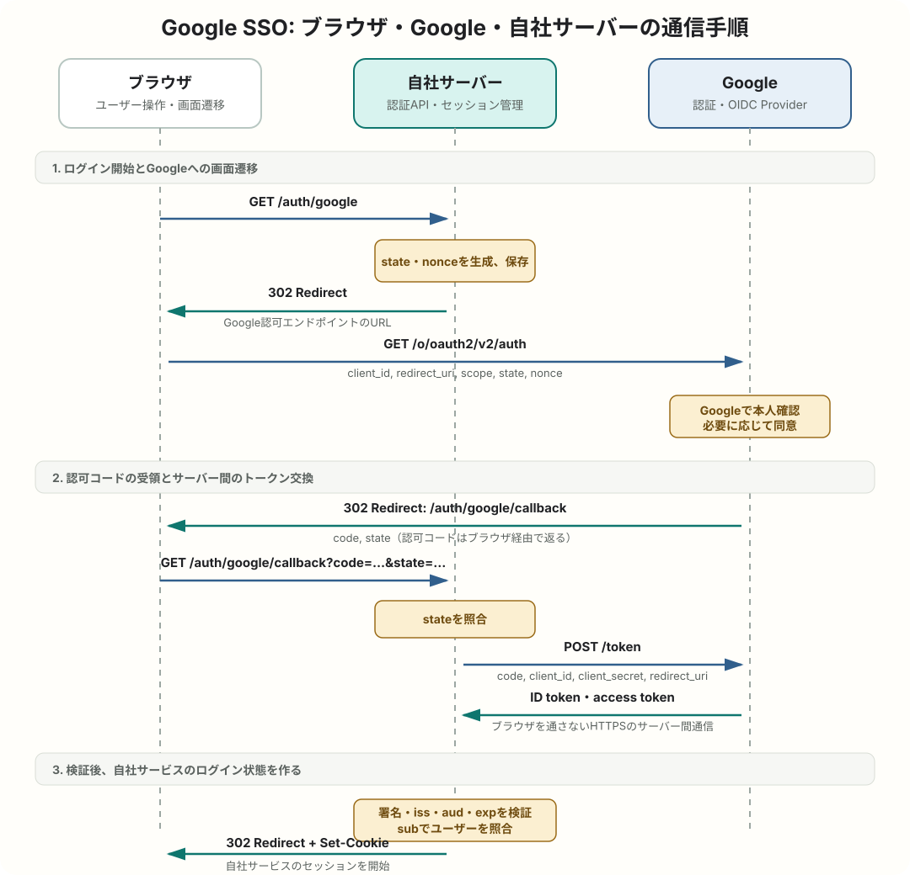

認証 / OpenID Connect
Google認証によるSSOの仕組みと導入手順
既存プロダクトに「Googleでログイン」を追加するときの仕組み、必要なインフラ、実装手順、既存アカウントとの安全な紐付け方を整理します。
簡潔なQ&A
- Q. Google認証によるSSOとは何ですか？
- A. プロダクトがGoogleのパスワードを預からず、Googleが本人確認した結果をOpenID Connect（OIDC）のIDトークンとして受け取り、自サービスのログインに利用する仕組みです。ユーザーはGoogleアカウントを使って複数サービスへログインできます。
- Q. OAuth 2.0との違いは何ですか？
- A. OAuth 2.0はGoogle DriveやCalendarなどを操作する「権限の委譲」が中心です。ログインには、OAuth 2.0の上に本人確認を追加したOpenID Connectを使います。ログインだけなら通常は
openid email profileの範囲で足ります。 - Q. Google Cloud上にプロダクトを移す必要がありますか？
- A. ありません。Google Cloud側にはOAuthクライアントと同意画面を設定しますが、アプリ本体、DB、セッション基盤はAWS、Azure、オンプレミスなど既存環境のままでも導入できます。
- Q. 最小構成は何ですか？
- A. HTTPSで公開されたWebアプリ、Googleから戻るコールバックAPI、ユーザーDB、アプリ独自のセッション管理、クライアントシークレットを保管する秘密管理基盤が基本です。
- Q. OIDCを実装済みの場合、SSOについてはどこを読めばよいですか？
- A. OIDC実装者向け: SSOによって何が変わるかを読むと、Googleと自社サービスのセッションの関係、ログアウト、ユーザー管理、運用への影響をまとめて確認できます。

仕組みの全体像
GoogleをIdentity Provider（IdP）、既存プロダクトをRelying Party（RP）として利用します。一般的なサーバー付きWebアプリでは、OpenID ConnectのAuthorization Code Flowを認証ライブラリ経由で実装します。

- ユーザーが「Googleでログイン」を選ぶ。
- プロダクトが
stateやnonceを生成し、Googleの認証画面へリダイレクトする。 - Googleがユーザーを認証し、同意後に一時的な認可コードを登録済みのコールバックURLへ返す。
- バックエンドが認可コードをトークンエンドポイントへ送り、IDトークンを受け取る。
- バックエンドが署名、
iss、aud、exp、必要に応じてnonceやhdを検証する。 - 検証済みの
subをGoogle側の不変なユーザーIDとしてDBで照合し、自サービスのセッションCookieを発行する。
IDトークンは「このユーザーをGoogleが認証した」という主張です。アクセストークンはGoogle APIを呼び出すための権限です。自サービスのログイン状態には、検証後に発行する自サービス独自のセッションを使います。
OIDC実装者向け: SSOによって何が変わるか
OIDCを実装した経験があるなら、認可コードの交換やIDトークン検証を新しく学び直す必要はありません。SSOで重要なのはプロトコルの追加ではなく、Googleですでに成立しているログイン状態が、別のサービスへログインするときにも利用されることが、ユーザー体験と運用へどう影響するかです。
OIDCは通信規約、SSOはその結果として得られる利用体験
OIDCは、Relying Party（自社サービス）がOpenID Provider（Google）へ認証を依頼し、IDトークンを受け取って検証するための規約です。SSOは、複数のサービスが同じIdPへ認証を依頼したとき、IdP側のログインセッションを再利用できるため、ユーザーがサービスごとにパスワードを入力し直さずに済む状態を指します。
たとえばユーザーが先にGmailへログインしていれば、Googleにはすでに認証済みセッションがあります。その状態で自社サービスがGoogleへOIDC認証を要求すると、Googleは再度パスワード入力を求めず、アカウント選択や同意だけで認証結果を返せる場合があります。これが「Googleを使ったSSO」として見える部分です。
セッションは共有されず、3つの状態が別々に存在する
| 状態 | 管理者 | 役割 |
|---|---|---|
| Googleのログインセッション | Googleがユーザーをすでに認証済みかを表す。GoogleドメインのCookie等で管理され、自社サーバーから直接読むことはできない。 | |
| OIDCの認証トランザクション | Googleと自社サーバー | state、nonce、認可コード、IDトークンを使い、今回のログイン要求が正当かを確認する短時間の処理。 |
| 自社サービスのセッション | 自社サービス | OIDC認証後に自社が発行するログイン状態。期限、Cookie、強制失効、権限確認は自社の責任で管理する。 |
SSOは、GoogleのセッションCookieを複数サービスへ配る仕組みではありません。各サービスはそれぞれGoogleへリダイレクトし、OIDCの認証結果を受け取った後、それぞれ独自のセッションを作ります。
初回ログインと2回目以降で何が変わるか
| 場面 | Google側 | 自社サービス側 |
|---|---|---|
| Googleにも未ログイン | パスワード、パスキー、多要素認証などで本人確認を行う。 | 認証結果を検証し、新規登録または既存ユーザーとの紐付けを行う。 |
| Googleにはログイン済み、自社には未ログイン | 既存セッションを再利用するため、パスワード入力を省略できる場合がある。 | OIDCフロー自体は毎回実行し、受け取った結果から新しい自社セッションを作る。 |
| 自社セッションも有効 | 通常は問い合わせない。 | 既存の自社セッションだけで画面を表示する。 |
つまり、SSOによって省略される可能性があるのは主にGoogleでの本人確認操作です。自社サーバーでのIDトークン検証、ユーザー照合、停止状態や権限の確認まで省略してよいわけではありません。
ログアウトは自動的に連動しない
自社サービスからログアウトしても、通常は自社セッションが終了するだけで、Googleのログインセッションや別サービスのセッションは残ります。そのため、再び「Googleでログイン」を選ぶと、Googleでのパスワード入力なしに戻ってこられる場合があります。
逆にGoogleからログアウトしても、すでに発行済みの自社セッションが即座に消えるとは限りません。自社セッションをいつ失効させるか、重要操作で再認証を要求するか、アカウント停止をどう反映するかは、自社側で設計する必要があります。OIDCにはRPからIdPへログアウトを要求する仕様もありますが、プロバイダーの対応状況と、他サービスまでログアウトさせることの利用者影響を確認して採用します。
SSO導入によって影響を受ける設計
| 領域 | 主な影響 |
|---|---|
| ログインUX | パスワード入力が減る一方、複数Googleアカウント利用時のアカウント選択や、意図しないアカウントでのログインを考慮する。 |
| アカウントモデル | メールアドレスではなくissuer + subを外部IDとして保存し、既存アカウントとの安全な紐付け・解除を用意する。 |
| 認可 | Googleが保証するのは認証結果であり、自社の契約、ロール、テナント、停止状態は引き続き自社で判定する。 |
| セッション管理 | Googleと自社の有効期限は別々。自社のアイドルタイムアウト、絶対有効期限、強制失効、重要操作の再認証を決める。 |
| 障害と依存関係 | Googleの認証障害、ネットワーク障害、設定ミスが新規ログインへ影響する。既存自社セッションを継続できるか、代替ログインを残すかを決める。 |
| セキュリティ | 多要素認証等をIdPへ集約できる一方、Googleアカウント侵害時の影響範囲が広がる。高リスク操作では追加確認を検討する。 |
| ユーザーライフサイクル | SSOだけでは入社・異動・退職に伴う作成、権限変更、削除は自動化されない。企業用途では別のプロビジョニング手段が必要になる場合がある。 |
OIDCを実装済みなら追加で決めること
- Googleにログイン済みなら、どの程度操作を省略してログインさせるか。
- 複数Googleアカウントがあるとき、アカウント選択をどう扱うか。
- Googleと自社のログアウトを連動させるか、それぞれ独立させるか。
- Google側の認証から時間が経過した重要操作で、再認証を要求するか。
- Googleアカウント停止・侵害・組織離脱を、自社セッションと権限へいつ反映するか。
- Google認証が利用できない場合に、既存セッション、管理者対応、代替ログインをどう扱うか。
一言でまとめると、OIDC実装が「Googleの認証結果を安全に受け取る方法」なら、SSO設計は「Googleの認証済み状態へ依存することで、ログイン体験、セッション境界、運用責任がどう変わるかを決める作業」です。
既存プロダクトへの組み込み方
既存ユーザーと外部IDを分離する
ユーザーテーブルへGoogle固有列を直接増やす方法でも始められますが、将来ほかのIdPを追加するなら、外部IDを別テーブルにするほうが拡張しやすくなります。
users
id
display_name
status
external_identities
user_id
provider # "google"
provider_subject # IDトークンの sub
email_at_link
created_at
UNIQUE(provider, provider_subject)
主キーとして使うのはメールアドレスではなくsubです。メールアドレスは変わる可能性があり、Google公式資料も一意な識別にはsubを使うよう案内しています。
アカウント紐付けの方針を先に決める
| ケース | 推奨する扱い |
|---|---|
| 新規ユーザー | 利用規約への同意や必須プロフィール入力を経て、ユーザーとGoogleのsubを登録する。 |
| 既存ユーザーがログイン済み | 設定画面からGoogleアカウントを追加し、再認証やCSRF対策を行って明示的に紐付ける。 |
| 同じメールの既存ユーザーがいる | 無条件に自動連携しない。既存の認証方法で本人確認してから紐付ける方針が安全。 |
| 組織内ユーザーだけ許可 | メール末尾ではなくIDトークンのhdを検証し、アプリ側の許可組織・ユーザー・状態も確認する。 |
必要なインフラ環境
| 構成要素 | 役割 |
|---|---|
| Google Cloudプロジェクト | Google Auth Platformのブランド、対象ユーザー、スコープ、OAuthクライアントを管理する。 |
| OAuth 2.0クライアント | 本番・ステージング・開発を分け、Authorized JavaScript originsとRedirect URIを環境ごとに登録する。 |
| HTTPSのWeb/API | ログイン開始、コールバック、ログアウト、アカウント紐付け・解除のエンドポイントを提供する。 |
| ユーザーDB | 自サービスのユーザーと(provider, sub)の対応を保存する。 |
| セッションストア | Cookieベースのサーバーセッション、または短命なアクセストークンと安全な更新手段を管理する。単一サーバーならDB、複数台ならRedis等も候補。 |
| 秘密管理 | クライアントシークレットやセッション署名鍵をSecret Manager、Secrets Manager、Vault等に保管する。ブラウザへ配布しない。 |
| 監視・監査ログ | ログイン成功・失敗、紐付け・解除、設定変更を記録する。IDトークンやCookieそのものはログへ残さない。 |
Google認証だけのためにKubernetesなど大きな基盤を追加する必要はありません。既存バックエンドとDBがあれば、主な追加はGoogle Cloud側の設定、認証エンドポイント、外部IDテーブル、秘密管理です。
実装手順
- ログイン対象を、一般のGoogleアカウント、特定Google Workspace組織、招待済みユーザーのどれにするか決める。
- Google Cloudで開発用と本番用のプロジェクトまたはOAuthクライアントを分ける。
- Google Auth PlatformのBrandingでアプリ名、サポート窓口、ホームページ、プライバシーポリシー、利用規約、承認済みドメインを設定する。
- Web applicationのOAuthクライアントを作成し、JavaScript originとコールバックURLを完全一致で登録する。
- 公式または十分に保守されたOIDCライブラリを選び、Authorization Code Flow、
state、nonce、必要ならPKCEを有効にする。 - コールバックでIDトークンを検証し、
subからユーザーを検索して、自サービスのセッションを発行する。 - 新規登録、既存アカウントへの紐付け、解除、停止ユーザー、退会済みユーザーの処理を実装する。
- ローカル、ステージングでテストし、本番ドメインと公開ページを整えて、必要なブランド確認やスコープ確認を申請する。
- 段階リリースし、ログイン成功率、コールバックエラー、アカウント重複、問い合わせを監視する。
セキュリティ上の注意点
- IDトークンを単にBase64デコードして信用せず、署名と
aud、iss、expをサーバー側で検証する。 stateでログインCSRFを防ぎ、フローに応じてnonceとPKCEも利用する。- Redirect URIは固定の許可リストにし、ログイン後の遷移先パラメーターでオープンリダイレクトを作らない。
- セッションCookieには
Secure、HttpOnly、適切なSameSiteを設定し、ログイン成功時にセッションIDを更新する。 - Googleログイン成功だけで権限を決めず、契約状態、招待、ロール、停止状態など自サービス側の認可を毎回確認する。
- ログインだけならGoogle API用アクセストークンやリフレッシュトークンを保存しない。必要なGoogle API機能は後から最小スコープで追加する。
- 自サービスのログアウトは通常、自サービスのセッションを終了する処理であり、Googleアカウント全体からログアウトさせる処理ではない。
「Googleでログイン」と企業SSOの違い
一般公開サービスにGoogleログインを追加する場合、複数のGoogleアカウントで使える外部ログイン機能という意味合いが強くなります。一方、特定企業のGoogle Workspaceアカウントだけを受け入れ、退職・異動時の停止や組織ポリシーと連動させる場合は、企業SSOとしての性格が強くなります。
企業向けではhdの検証だけで完結させず、許可組織、招待、ユーザー状態、ロールをアプリ側でも管理します。即時のアカウント停止同期や自動プロビジョニングまで必要なら、OIDCログインに加えてWorkspace管理、Directory API、SCIM対応のIdP・認証基盤などを別途検討します。
導入前のチェックリスト
- 既存ログインを残すか、Google必須にするかを決めた。
- 同一メールアドレスの既存アカウントをどう紐付けるか決めた。
(provider, sub)に一意制約がある。- 開発・ステージング・本番のOAuth設定と秘密を分離した。
- プライバシーポリシーに取得情報と利用目的を記載した。
- ログイン、紐付け、解除、停止、退会、障害時の代替手段をテストした。
- トークンや認証Cookieをログ・分析基盤へ送らない設定にした。
要点
Google SSOは、GoogleのOIDC認証結果を検証し、Googleのsubと既存プロダクトのユーザーを安全に対応付けた後、自サービスのセッションを発行する仕組みです。Google Cloud上へシステムを移す必要はありません。実装の中心は、OAuthクライアント設定、コールバックAPI、IDトークン検証、外部IDテーブル、既存アカウントの紐付け方針、セッション保護です。